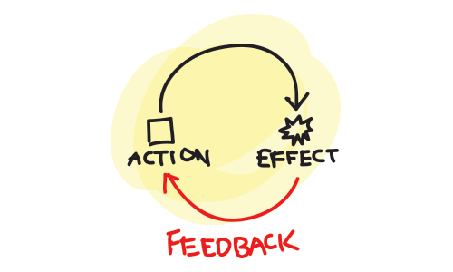
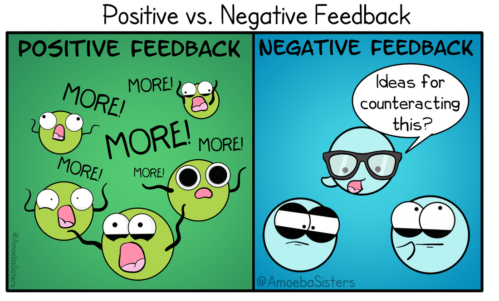

Positive or negative? Hmmmm....
Psychologists study relationships between variables in systems. The concept of feedback is important in the study of such relationships. In psychology, feedback refers not only to information gained from research and experiments, but also to system management.
Our bodies can be considered biological systems and our minds cognitive systems. Feedback is the signal that is looped back to a system so that adjustments can be made to the functioning of that system. The loop is called a feedback loop.

Every system has inputs and outputs in the form of information or materials. A feedback loop occurs when one or more of the outputs of a system is returned to the system as an input.
Feedback comes in two main forms, positive feedback and negative feedback. The terms positive and negative are not meant as value judgements regarding the quality of the feedback. Simply stated, negative feedback tends to reduce output and positive feedback tends to increase output. Positive and negative feedback are explored further on the next pages.
